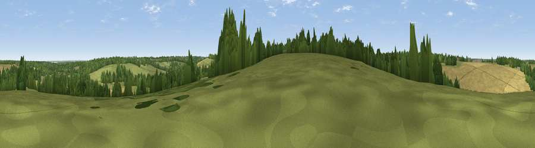

Viewpoint near Bridge
#39535 in England · top 74% of its area beats it · near BridgeThe view, rendered

A 360° render of this exact spot computed from the terrain model, tree cover and land cover — summer colours, afternoon light, calibrated against photographs of famous viewpoints. Real trees, hedges and buildings will differ in detail.
The panorama
Grey silhouette: terrain skyline in each direction (720 bearings, Earth curvature and refraction included). Dashed green: skyline with trees (+15 m) and buildings (+8 m) as obstacles. Blue strip: how far the ground is visible on each bearing.
Where the view opens
Wedge length = distance to the farthest visible ground on that bearing (vegetation-aware). Rings at 10, 25 and 50 km.
What fills the view
38% cropland · 33% grassland · 26% woodland · 2% built-up
Angular shares of the visible panorama (visual magnitude), not map area. Landscape diversity 0.51 (0–1 Shannon).
Key numbers
More beautiful places nearby
The staircase of upgrades: each row has a higher view potential than everything closer. Driving times are estimates from straight-line distance, calibrated against real road routing — check an actual route before setting out.
| Place | Direction | Drive | Score |
|---|---|---|---|
| Viewpoint near Bishopsbourne | SSW · 2 km | ~6 min | 35.1 |
| Viewpoint near Chartham | W · 6 km | ~13 min | 35.2 |
| Viewpoint near Broad Oak | N · 7 km | ~15 min | 53.5 |
| Viewpoint near Dunkirk | NW · 12 km | ~22 min | 55.8 |
| Viewpoint near Wye | WSW · 12 km | ~23 min | 70.9 |
| Viewpoint near Brabourne | SW · 13 km | ~24 min | 71.6 |
| Viewpoint near Brabourne | SW · 13 km | ~24 min | 71.9 |
| Viewpoint near Etchinghill | S · 15 km | ~27 min | 76.9 |
51.23811, 1.11339 · source: screening · position refined by local search. Computed location — check access rights before visiting.